<!DOCTYPE html PUBLIC "-//W3C//DTD XHTML 1.0 Transitional//EN" "http://www.w3.org/TR/xhtml1/DTD/xhtml1-transitional.dtd">
<html xmlns="http://www.w3.org/1999/xhtml">
<head>
<meta http-equiv="Content-Type" content="text/html; charset=iso-8859-1" />
<meta http-equiv="Content-Style-Type" content="text/css" />
<meta http-equiv="Content-Script-Type" content="text/javascript" />
<meta http-equiv="Content-Language" content="en-us" />
<meta name="Description" content="thermodynamics" />
<meta name="Keywords" content="thermodynamics" />
<meta name="author" content="martin chaplin: martin.chaplin@btinternet.com" />

<title>Thermodynamics</title>
<script language="javascript" type="text/javascript" src="head.js"></script>
</head>
<noscript>
Your browser does not support JavaScript!
</noscript>
<head>
<link rel="shortcut icon" href="/water/favicon.ico" type="image/x-icon" />
<link rel="ToC" href="/water/water_structure_science.html" />
<link rel="stylesheet" href="water.css" type="text/css" />

</head>
<body onload="mm_preloadImages('images/seab1.gif','images/seab3.gif','images/seab4.gif','images/top2.gif', 'images/top3.gif')">
<a name="top" id="top"></a>
<div style="width:761px; height:93px; background-color:#006868;padding-top:3px;border:0px;margin:0px;">
  <div style="padding:0px;border:0px;margin:0px;padding-left:3px;width:140px; height:22px; background-color:#006868; float:left; display:inline;">
    <form class="quicklinkform" action=" ">
      <label for="&rdquo;menu1&rdquo;"></label>
      <select class="quicklink"
            onchange="mm_jumpMenu('parent',this,0)" name="menu1" id="&rdquo;menu1&rdquo;">
       <option  value="index.html" selected="selected">Quick links</option>
        <option value="index.html">......................................</option>
        <option value="water_molecule.html">Water molecule</option>
        <option value="water_hydrogen_bonding.html">hydrogen-bonding</option>
        <option value="water_phase_diagram.html">Phase diagram</option>
        <option value="water_vibrational_spectrum.html">Water spectrum</option>
        <option value="water_dissociation.html">Dissociation</option>
        <option value="water_anomalies.html">Anomalies</option>
        <option value="water_properties.html">Water properties</option>
        <option value="index.html">......................................</option>
        <option value="clusters_overview.html">Water clusters</option>
        <option value="protein_hydration.html">Protein hydration</option>
        <option value="hydrocolloids_gums.html">Hydrocolloids</option>
        <option value="ion_hydration.html">Ions</option>
        <option value="index.html">......................................</option>
        <option value="water_structure_science.html">Table of Contents</option>
        <option value="water_sitemap.html">Site map</option>
</select>
</form>
</div>
  <div style="padding:0px;border:0px;margin:0px; height:22px; background-color:#006868; float:left; display:inline;"><a href="search.html" onmouseout="mm_swapImgRestore()" onmouseover="mm_swapImage('search','','images/seab1.gif',1)"></a><a href="water_sitemap.html"></a><a href="/php-cgiwrap/water/pfp.php3?page=http://www1.lsbu.ac.uk/water/thermodynamics.html" onmouseout="mm_swapImgRestore()" onmouseover="mm_swapImage('printer','','images/seab4.gif',1)"  ></a><a href="add1.html"></a></div>
  <map name="topmap" id="topmap">
    <area shape="poly" coords="322,42,429,42,429,61,322,61" href="martin_chaplin.html" title="Go to my page" alt="Go to my page" onmouseout="mm_swapImgRestore()" onmouseover="mm_swapImage('topi','','images/top3.gif',1)"  />
      <area shape="poly" coords="537,11,538,38,677,38,701,16,731,40,701,64,674,41,188,43,188,11" href="water_structure_science.html" title="Go to Water Structure and Science site contents" alt="Water Structure and Science" onmouseout="mm_swapImgRestore()" onmouseover="mm_swapImage('topi','','images/top2.gif',1)" />
</map>
  <div style="padding:0px;border:0px; margin-left:3px; width:755px; background-color:#006868;"></div>
</div>
<div style="width:761px; background-color:#006868;padding:0px;border:0px;margin:0px;">
  <div style="width:751px; background-image:url('images/bg.gif');margin-left:3px;padding-left:4px;border:0px;padding-top:0px;padding-bottom:0px; background-color:#FFFae2;">
    <!-- print begin -->
      <figure  class="floatright">
  <figcaption>
    <p align="center">&nbsp;</p>
	    </figcaption>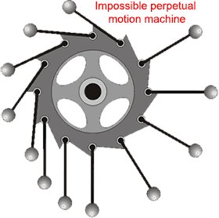 </figure>
    <h1>Thermodynamics; Introduction</h1>
    <p>Thermodynamics  describes heat and energy changes and chemical equilibria. It allows the prediction of equilibria positions, but <strong>NOT</strong> the  rates of reaction or rates of change. </p>
    <p>&nbsp;</p>
    <p class="style16"><strong> <a href="#0k">The temperature scale and absolute zero</a></strong></p>
    <p class="style16"><strong> <a href="#0th">The  Zeroth Law of Thermodynamics</a></strong></p>
    <p class="style16"><strong> <a href="#1st" title="go to section below">The  First Law of Thermodynamics</a><br />
       <a href="#2nd">The  Second Law of Thermodynamics</a><br />
     <a href="#3rd">The  Third Law of Thermodynamics</a></strong></p>
    <p class="style16"><strong><span class="style16"> </span><a href="#pot">Chemical potential</a><br />
    <span class="style16"></span><a href="#int"> Internal energy</a></strong></p>
    <p class="style16"><strong><span class="style16"></span> <a href="#Cp">Heat capacity and specific heat</a> </strong></p>
    <p class="style16"><strong><a href="#b"><span class="style16"></span> Helmholtz free energy</a></strong></p>
    <p class="style16"><strong><a href="#power"><span class="style16"></span> Power</a></strong></p>
    <p class="style16"><strong><a href="#e"> Boltzmann constant</a></strong></p>
  
    <p>&nbsp;</p>
    <div class="style10" style="width:600px;">
    <p align="center"><em>'classical thermodynamics ...... is the only physical theory of universal &nbsp;&nbsp;&nbsp;&nbsp;&nbsp;&nbsp;&nbsp;&nbsp;&nbsp;&nbsp;&nbsp;&nbsp;&nbsp;&nbsp;&nbsp;&nbsp;&nbsp;&nbsp;&nbsp;&nbsp;&nbsp;&nbsp;&nbsp;&nbsp;&nbsp;&nbsp;&nbsp;&nbsp;&nbsp;&nbsp;&nbsp;&nbsp;&nbsp;&nbsp;&nbsp;&nbsp;&nbsp;&nbsp;&nbsp;&nbsp;&nbsp;&nbsp;&nbsp;&nbsp;&nbsp;&nbsp;&nbsp;&nbsp;&nbsp;&nbsp;&nbsp;&nbsp;&nbsp;&nbsp;&nbsp;&nbsp;content </em><em>which  I am convinced will never be overthrown'</em></p>
</div>
    <div class="style4">
      <p align="right">Albert Einstein&nbsp;</p>
</div>
    <p>&nbsp;</p>
    <p>This webpage  forms  an elementary introduction to the terms and ideas of thermodynamics. Of great importance is that the laws of thermodynamics are &nbsp;fundamental laws of the Universe and cannot be circumvented. Remember this, and one will not be misled by purveyors of 'too good to be true' ideas such as <a href="water_powered_car.html">running cars on just water</a>. Thermodynamics describes the energy content of systems at equilibrium and their transformations and is independent of the pathway chosen. Thermodynamics is not to be confused with kinetics, which describes the rate of change of processes and their mechanisms and depends on the pathway chosen. Biological systems (e.g., live people) are not in thermodynamic equilibrium as they are not static and are subject to the movement of matter and energy to and from other systems.</p>
    <p>&nbsp;</p>
    <p><strong>Heat</strong> is the amount of energy flowing from one body of matter to another spontaneously due to their temperature difference or by any means other than through work or the transfer of matter. <strong>Sensible heat </strong>is the energy required to change the temperature of a substance with no phase change. <strong>Latent heat </strong>is the energy required to cause phase changes  between liquids, gases, and solids.</p>
    <p>&nbsp;</p>
    <p><strong>Temperature</strong> is a quantitative measure of hot and cold (<a href="constants.html#kelvin">K</a>). Hotness is a body's ability to impart energy as&nbsp;heat&nbsp;to another colder body. It is a bulk property of matter (as are pressure, concentration, density, refractive index, and melting point) and should not be applied to single particles (e.g., molecules). Several temperature scales have been described, but the <abbr title="Le Syst&egrave;me International d'Unit&eacute;s"><a href="http://physics.nist.gov/Pubs/SP330/sp330.pdf"   target="otherWin213" onclick="newWin('otherWin213')">SI</a></abbr> scale   [<a title="go to cited reference"  href="ref11.html#r1031">1031</a><a name="r1031" id="r1031"></a>] uses the kelvin.</p>
    <p>&nbsp;</p>
    <p><strong>Pressure</strong> is the force per unit area (<a href="constants.html#Pa" title="pascal">Pa</a>). It may be positive or negative and is not, in itself, directional.  A positive pressure indicates that the system tends to expand whereas a <a href="ice_xvi.html#a" title="go for more explanation">negative pressure</a> tends to contract.</p>
    <p>&nbsp;</p>
    <p><strong>Density</strong> of any substance is its mass&nbsp;(kg)&nbsp;divided by its volume&nbsp;(m<sup>3</sup>).</p>
    <p>&nbsp;</p>
    <p><strong>Energy</strong> is difficult to define precisely, being based on the Laws of thermodynamics. In different circumstances, it can be the capacity to do work, or the capacity to provide heat or radiation. There can be a conversion between different forms of energy, but energy cannot be created or destroyed. Energy has no natural zero states, so values are referred relative to (arbitrarily) chosen standard states.</p>
    <p>&nbsp;</p>
    <p><strong>Equilibrium</strong> is a state iwhen opposing forces, motions, energies, and materials are balanced and do not change with time.</p>
    <p>&nbsp;</p>
    <p><strong>Work</strong> is the energy associated with the action of a force.</p>
    <p>&nbsp;</p>
    <p><strong>Adiabatic</strong> processes occur without loss or gain of heat energy</p>
    <p><strong>Isobaric</strong> processes occur at constant&nbsp;pressure</p>
    <p><strong>Isothermal</strong> processes occur at a constant&nbsp;temperature</p>
    <p><strong>Isochoric</strong> processes occur at constant&nbsp;<a title="Volume (thermodynamics)">volume</a></p>
    <p><strong>Isenthalpic</strong> processes occur at a constant&nbsp;<a href="#H">enthalpy</a></p>
    <p><strong>Isentropic</strong> processes are reversible adiabatic processes and occur at a constant&nbsp;<a href="#S">entropy</a>    </p>
    <p><strong>Steady state</strong> processes occur without any change in the&nbsp;<a href="#int" title="Internal energy">internal energy</a></p>
    <p>&nbsp;</p>
    <p><strong>Symbols.</strong> The symbol &Delta; (capital delta) means the change between the start and end states (see <a href="#H">below</a>). The symbol &delta; (small delta) means &quot; a small change in&quot;. The symbol d (dee) is a differential (meaning &quot;an  infinitesimal change in&quot;). The symbol  &part; (partial dee) is a  mathematical symbol to denote a partial derivative, meaning the change in a function of several variables concerning one of those variables, under some constant conditions (usually the remaining conditions) as stated in the subscript(s). Thus, (&#8706;H/&#8706;T)<sub>P</sub> is the partial derivative of H with respect to T under conditions of constant P (see <a href="#Cp">below</a>).    </p>
    <p>&nbsp;</p>
    <p align="center">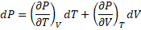 <strong> &nbsp;&nbsp;&nbsp;&nbsp;&nbsp;&nbsp;&nbsp;&nbsp;&nbsp;&nbsp;&nbsp;&nbsp;&nbsp;&nbsp;&nbsp;&nbsp;&nbsp;&nbsp;&nbsp;&nbsp;</strong>(Pa)</p>
    <hr />
    <p>&nbsp;</p>
    <p>Although advanced thermodynamics can appear daunting when first encountered, there   are just three primary concepts: energy, entropy, and   absolute temperature.</p>
    <h2><a name="0k" id="0k"></a>The temperature scale and absolute zero </h2>
    <p>Temperature is a numerical scale  of relative hotness versus coldness. It is an intensive physical quantity for a material  (does not depend on the amount of substance present in the system) and, when it increases, it indicates that the material has increased its energy content. The temperature may usually be considered as a measure for the average kinetic energy  of particles. Absolute zero is the lowest limit for the thermodynamic temperature scale; nothing can be colder. It is defined as zero <a href="constants.html#kelvin">kelvin</a> (0 K exactly; &minus;273.15&nbsp;&deg;C ,  &minus;459.67&nbsp;&deg;F) and cannot be reached (the thermodynamic temperature is often also called the absolute temperature, on the kelvin scale). The temperature scale did define the triple point of water (a triple point is a singular state with its own unique and invariant temperature and pressure) as +273.16 K precisely, and this set the kelvin temperature scale and the size of the kelvin; each kelvin increase within this scale increased the average kinetic energy by the same amount.  However, the kelvin is now redefined in terms of the Boltzmann constant (<em>k</em><sub>B</sub> = 1.380 649 &#739; 10<sup>&minus;23</sup> <a href="#J">J</a> &#739; K<sup>&minus;1</sup> exactly [<a title="go to cited reference"  href="ref24.html#r2395">2395</a>]) <a name="be" id="be"></a><sup> <a title="click for an explanation" href="#e">e</a></sup>, the second, the meter and the kilogram. Withinpresently measurable bounds, the new exact kelvin is equal to the old experimental kelvin.</p>
    <p>&nbsp;</p>
    <p align="center"> <sup> &nbsp;&nbsp;&nbsp;&nbsp;&nbsp;&nbsp; &nbsp;&nbsp;&nbsp;&nbsp;&nbsp;&nbsp; &nbsp;&nbsp;&nbsp;&nbsp;&nbsp;&nbsp;&nbsp;</sup><sup> &nbsp;&nbsp;&nbsp;&nbsp;&nbsp;&nbsp; &nbsp;&nbsp;&nbsp;&nbsp;&nbsp;&nbsp; &nbsp;&nbsp;&nbsp;&nbsp;&nbsp;&nbsp;&nbsp;</sup>&nbsp;&nbsp;&nbsp;&nbsp;&nbsp;One kelvin = 1.380 649 &#739; 10<sup>&minus;23</sup> <a href="constants.html#J">J</a> &#739;<em> k</em><sub>B</sub><sup>&minus;1 &nbsp;&nbsp;&nbsp;&nbsp; &nbsp;&nbsp;&nbsp;&nbsp;&nbsp;&nbsp; &nbsp;&nbsp;&nbsp;&nbsp;&nbsp;&nbsp; &nbsp;&nbsp;&nbsp;&nbsp;&nbsp;&nbsp;&nbsp;</sup>&nbsp;(exactly) [<a title="go to cited reference"  href="ref24.html#r2395">2395</a>]</p>
    <p>&nbsp;</p>
    <p>The closest approach to absolute zero achieved so far is about +0.000 000 000 038 K (38 pK). </p>
    <p>&nbsp;</p>
    <p>Under special conditions, negative temperatures in which high-energy states are more occupied than low energy states are also possible [<a title="go to cited reference" href="ref42.html#r4191">4191</a><a name="r4191" id="r4191"></a>].</p>
    <h2><a name="int" id="int"></a>Internal energy</h2>
    <p>Thermodynamics introduces the term<strong> U,</strong>   the <strong>INTERNAL ENERGY</strong>; the energy contained within the system, including its vibrational energy and bonding and interactional energy. This depends on the number of its accessible quantum states and its volume at a given pressure. The internal energy <strong> U</strong> is equivalent to the energy required to create the system.</p>
    <p>&nbsp;</p>
    <p align="left
    ">  <strong>&Delta;U</strong> is the change in the <strong>Internal energy</strong>; <strong>&Delta;U</strong> equals the heat added to a system less the work done by the system during a change to the system.. </p>
    <h2><a name="0th" id="0th"></a>The  Zeroth Law of Thermodynamics</h2>    
    <p>The  Zeroth Law of Thermodynamics  states that two bodies in contact will come to the same temperature.    It follows that If  body A is in thermal equilibrium with two other bodies, B, and C, then B and C are in thermal equilibrium with one another.</p>

    <h2><a name="1st" id="1st"></a>The  First Law of Thermodynamics</h2>
    <p>The  First Law of Thermodynamics is the law of conservation of energy:</p>
    <p><br />  
</p>    
    <p>&nbsp;&nbsp;&nbsp;&nbsp;&nbsp;&nbsp;&nbsp;&nbsp;&nbsp;&nbsp;&nbsp;&nbsp;&nbsp;&nbsp;&nbsp;&nbsp;&nbsp;&nbsp;&nbsp;&nbsp;&nbsp;&nbsp;&nbsp;&nbsp;&nbsp;&nbsp;&nbsp;&nbsp;&nbsp;&nbsp;&nbsp;&nbsp;&nbsp;&nbsp;&nbsp;&nbsp;&nbsp;&nbsp;&nbsp;&nbsp;&nbsp;&nbsp;&nbsp;  '<strong>Energy can neither be created nor  destroyed</strong>'</p>
    <p>&nbsp;</p>
    <p>It can  be expressed in everyday terms:</p>
    <p>&nbsp;</p>        
    <p><strong>&nbsp;&nbsp;&nbsp;&nbsp;&nbsp;&nbsp;&nbsp;&nbsp;&nbsp;&nbsp;&nbsp;&nbsp;&nbsp;&nbsp;&nbsp;&nbsp;&nbsp;&nbsp;&nbsp;&nbsp;&nbsp;&nbsp;&nbsp;&nbsp;&nbsp;&nbsp;&nbsp;&nbsp;&nbsp;&nbsp;&nbsp;&nbsp;&nbsp;&nbsp;&nbsp;&nbsp;&nbsp;&nbsp;&nbsp;&nbsp;&nbsp;&nbsp;&nbsp;You can't win. You can only break even<br />  
</strong></p>    
    <p><strong>&nbsp;&nbsp;&nbsp;&nbsp;&nbsp;&nbsp;&nbsp;&nbsp;&nbsp;&nbsp;&nbsp;&nbsp;&nbsp;&nbsp;&nbsp;&nbsp;&nbsp;&nbsp;&nbsp;&nbsp;&nbsp;&nbsp;&nbsp;&nbsp;&nbsp;&nbsp;&nbsp;&nbsp;&nbsp;&nbsp;&nbsp;&nbsp;&nbsp;&nbsp;&nbsp;&nbsp;&nbsp;&nbsp;&nbsp;&nbsp;&nbsp;&nbsp;&nbsp;You do not get anything for  nothing<br />
</strong><strong>&nbsp;&nbsp;&nbsp;&nbsp;&nbsp;&nbsp;&nbsp;&nbsp;&nbsp;&nbsp;&nbsp;&nbsp;&nbsp;&nbsp;&nbsp;&nbsp;&nbsp;&nbsp;&nbsp;&nbsp;&nbsp;&nbsp;&nbsp;&nbsp;&nbsp;&nbsp;&nbsp;&nbsp;&nbsp;&nbsp;&nbsp;&nbsp;&nbsp;&nbsp;&nbsp;&nbsp;&nbsp;&nbsp;&nbsp;&nbsp;&nbsp;&nbsp;&nbsp;There is no such thing as a free  lunch</strong></p>
    <p><strong>&nbsp;&nbsp;&nbsp;&nbsp;&nbsp;&nbsp;&nbsp;&nbsp;&nbsp;&nbsp;&nbsp;&nbsp;&nbsp;&nbsp;&nbsp;&nbsp;&nbsp;&nbsp;&nbsp;&nbsp;&nbsp;&nbsp;&nbsp;&nbsp;&nbsp;&nbsp;&nbsp;&nbsp;&nbsp;&nbsp;&nbsp;&nbsp;&nbsp;&nbsp;&nbsp;&nbsp;&nbsp;&nbsp;&nbsp;&nbsp;&nbsp;&nbsp;&nbsp;The energy of the Universe is constant</strong></p>
    <p>&nbsp;</p>
    <p>It states that the  energy in an isolated closed system is conserved, where energy is the capacity to do work. Heat energy can do work by (for example) changing a temperature or  pressure. The isolated system may be a chemical reaction, a natural process, a cell,  the earth, etc., <a name="isol" id="isol"></a>If these systems are isolated, neither energy nor matter can enter or leave.</p>
    <p>&nbsp;</p>
    <p>For an isolated  closed system,  any change in the internal energy &Delta;U is composed of the exchanged heat &Delta;Q and work &Delta;W done on or by the system, </p>
    <p align="center"><strong>&Delta;U = &Delta;Q + &Delta;W</strong><strong> </strong>&nbsp;&nbsp;&nbsp;&nbsp;&nbsp;&nbsp;&nbsp;&nbsp;&nbsp;&nbsp;(<a href="constants.html#J">J</a>)</p>
    <p align="center">&nbsp;</p>
    <p>and for a reversible process, the heat energy change <strong>&Delta;Q =          T&Delta;S</strong> and the work done <strong>&Delta;W = -P&Delta;V</strong> ; (for non-spontaneous reactions , see the discussion at [<a title="go to cited reference" href="ref38.html#r3735">3735</a><a name="r3735" id="r3735"></a>]).</p>
    <p>&nbsp;</p>
    <p>Therefore, </p>
    <p align="center"><strong>&Delta;U = T&Delta;S  - P&Delta;V</strong><strong> </strong>&nbsp;&nbsp;&nbsp;&nbsp;&nbsp;&nbsp;&nbsp;&nbsp;&nbsp;&nbsp;(<a href="constants.html#J">J</a>)</p>
    <p>&nbsp;</p>
    <p><a name="H" id="H"></a>Thermodynamics introduces the term<strong> H,</strong>  the <strong>ENTHALPY</strong>; a measure of the heat content of the system (with units <a href="constants.html#J">J</a> &#739; mol<sup>&minus;1</sup>).  Enthalpy has no natural zero states, so values are referred relative to (arbitrarily) chosen standard states, with the standard states of materials being their enthalpy (heat) of formation (often at 298 K). The enthalpy <strong>H</strong> of a thermodynamic system is defined as the sum of its internal energy <strong>U</strong><em> </em>and the work required to achieve its pressure and volume, <strong>P &#739; V</strong> by &quot;making room&quot; for the system:</p>
    <p>&nbsp;</p>
    <p align="center"><strong>H = U + PV</strong><strong> </strong>&nbsp;&nbsp;&nbsp;&nbsp;&nbsp;&nbsp;&nbsp;&nbsp;&nbsp;&nbsp;(<a href="constants.html#J">J</a>)</p>
<p><br />  
</p>    
    <p>&nbsp;&nbsp;&nbsp;  <strong>&Delta;H</strong> is the <strong>CHANGE IN ENTHALPY</strong>; the  heat lost or gained    </p>
    <p align="center">&nbsp;</p>
    <p>In many biological systems, <strong>H = U</strong> as pressures and volumes, and their changes, are small.</p>
    <p>&nbsp;</p>
    <p>Under constant-pressure conditions, the change in enthalpy is given</p>
    <p>&nbsp;</p>
    <p align="center"><strong>&Delta;H = &Delta;U + P&Delta;V</strong><strong> </strong>&nbsp;&nbsp;&nbsp;&nbsp;&nbsp;&nbsp;&nbsp;&nbsp;&nbsp;&nbsp;(<a href="constants.html#J">J</a>)</p>
    <p>By convention:<br />  
</p>    
    <p>&nbsp;&nbsp;&nbsp;  &Delta;H is  negative when heat is released by the system; such as in exothermic processes<br />  
</p>    
    <p>&nbsp;&nbsp;&nbsp;  &Delta;H is  positive when heat is absorbed by the system; such as in endothermic processes</p>
    <p>&nbsp;</p>        
    <p>In a sequence of  reactions, the overall change in enthalpy is the sum of the enthalpies involved:</p>
    <p>&nbsp;</p>
    <p align="center"><strong>&Delta;H<sub>overall</sub> = &Sigma; &Delta;H</strong></p>
    <p>thus,<br />  
    &nbsp;&nbsp;&nbsp;&nbsp;&nbsp;&nbsp;&nbsp; &nbsp;&nbsp;&nbsp;&nbsp;&nbsp;A =  B&nbsp;&nbsp;&nbsp;&nbsp;&nbsp;&nbsp;&nbsp;&nbsp;&nbsp;&nbsp;&nbsp;&nbsp; &Delta;H<sub>1</sub>&nbsp;&nbsp;&nbsp;&nbsp;&nbsp;&nbsp;&nbsp;&nbsp;&nbsp;&nbsp;&nbsp;&nbsp;&nbsp;&nbsp;&nbsp;&nbsp;&nbsp;&nbsp;&nbsp;&nbsp;  e.g.&nbsp;&nbsp;&nbsp;&nbsp;&nbsp;&nbsp;&nbsp;&nbsp; C + &frac12;O<sub>2</sub>
    &nbsp; &nbsp;&nbsp;&nbsp;&nbsp;&nbsp;&nbsp;  CO&nbsp;&nbsp;&nbsp;&nbsp;&nbsp;&nbsp;&nbsp;&nbsp;&nbsp;&nbsp;&nbsp; &Delta;H<sub>1</sub>&nbsp;<br />  
    &nbsp;&nbsp;&nbsp;&nbsp;&nbsp;&nbsp;&nbsp; &nbsp;&nbsp;&nbsp;&nbsp;&nbsp;B =  C&nbsp;&nbsp;&nbsp;&nbsp;&nbsp;&nbsp;&nbsp;&nbsp;&nbsp;&nbsp;&nbsp;&nbsp; &Delta;H<sub>2</sub>&nbsp;&nbsp;&nbsp;&nbsp;&nbsp;&nbsp;&nbsp;&nbsp;&nbsp;&nbsp;&nbsp;&nbsp;&nbsp;&nbsp;&nbsp;&nbsp;&nbsp;&nbsp;&nbsp;&nbsp;  e.g.&nbsp;&nbsp;&nbsp;&nbsp;&nbsp;&nbsp;&nbsp;&nbsp; <u>CO +  &frac12;O</u><sub>2</sub>&nbsp; &nbsp;&nbsp;&nbsp;&nbsp;<u> CO</u><sub>2</sub>&nbsp;&nbsp;&nbsp;&nbsp;&nbsp;&nbsp;&nbsp;&nbsp;&nbsp;&nbsp;&nbsp;&Delta;H<sub>2</sub>&nbsp;&nbsp;&nbsp;&nbsp;&nbsp; &nbsp;&nbsp;&nbsp;&nbsp;&nbsp;&nbsp;&nbsp;&nbsp;&nbsp;&nbsp;&nbsp; <br />
      sum &nbsp;&nbsp;&nbsp;&nbsp;&nbsp;A+B =  B+C&nbsp;&nbsp;&nbsp;&nbsp;&Delta;H<sub>1</sub> + &Delta;H<sub>2</sub>&nbsp;&nbsp;&nbsp;&nbsp;&nbsp;&nbsp;&nbsp;&nbsp;&nbsp;&nbsp;&nbsp;&nbsp;&nbsp;&nbsp;&nbsp;&nbsp;&nbsp;&nbsp;&nbsp;&nbsp;&nbsp;&nbsp;&nbsp;&nbsp;&nbsp;&nbsp;&nbsp;  C + O<sub>2</sub>&nbsp;&nbsp; &nbsp;&nbsp;&nbsp;&nbsp;&nbsp;&nbsp;&nbsp;  CO<sub>2</sub>&nbsp;&nbsp;&nbsp;&nbsp;&nbsp;&nbsp;&nbsp; total &Delta;H = &Delta;H<sub>1</sub> + &Delta;H<sub>2</sub>&nbsp;&nbsp;&nbsp;&nbsp;<br />  
</p>    
    <p>&nbsp;</p>
    <p>However, &Delta;H  does not tell us if or how fast the process will go: e.g., </p>
    <p>&nbsp;</p>    
    <p>&nbsp;&nbsp;&nbsp;&nbsp;&nbsp;&nbsp;&nbsp; &nbsp;&nbsp;&nbsp;&nbsp;desk  burning;&nbsp;&nbsp;&nbsp;&nbsp;&nbsp;&nbsp;&nbsp;wood + O<sub>2</sub>&nbsp;&nbsp; &nbsp;&nbsp;&nbsp;&nbsp;&nbsp;&nbsp;  CO<sub>2</sub> + H<sub>2</sub>O&nbsp;&nbsp;&nbsp;&nbsp;&nbsp;&nbsp;&nbsp;&nbsp;&Delta;H is  negative, and heat is given out</p>
    <p>&nbsp;</p>
    <p>We know that a desk will not spontaneously burn as the reaction is incredibly slow. It would burn if we created a fire'<br />
</p>
    <p>&nbsp;</p>
    <p>&nbsp;&nbsp;&nbsp;&nbsp;&nbsp;&nbsp;&nbsp; &nbsp;&nbsp;&nbsp;&nbsp;melting of  ice;&nbsp;&nbsp;&nbsp;&nbsp;&nbsp;&nbsp;&nbsp;&nbsp;&nbsp;&nbsp;&nbsp;&nbsp;&nbsp;&nbsp;&nbsp;&nbsp;&nbsp;&nbsp;  ice&nbsp;&nbsp; &nbsp;&nbsp;&nbsp;&nbsp;&nbsp;&nbsp;  water&nbsp;&nbsp;&nbsp;&nbsp;&nbsp;&nbsp;&nbsp;&nbsp;&nbsp;  &nbsp;&nbsp;&nbsp;&nbsp;&nbsp;&nbsp;&nbsp;&Delta;H is  positive, and heat is absorbed</p>
    <p>&nbsp;</p>
    <p>We know that ice will melt if the temperature is above 0&nbsp;&deg;C.</p>    
    <p>&nbsp;</p>
    <p>Therefore an enthalpy  change, by itself, cannot predict the direction of a process. <br />
</p>

    <p align="right">[<a title="go to top of page" href="#top"><span class="style16">Back to Top&nbsp;</span></a>]</p>
    <h2><a name="2nd" id="2nd"></a>The  Second  Law of Thermodynamics</h2>
    <p>The  Second  Law of Thermodynamics tells us about the direction of processes; a hot coffee gets colder if it is let to stand&mdash;it never gets hotter. The  Second  Law of Thermodynamics states that the total disorder in an isolated system  can only increase over time. All closed-cycle systems are irreversible.</p>
    <p>&nbsp;</p>
    <p>It can  be expressed in everyday terms:    </p>
    <p><strong>&nbsp;&nbsp;&nbsp;&nbsp;&nbsp;&nbsp;&nbsp;&nbsp;&nbsp;&nbsp;&nbsp;&nbsp;&nbsp;&nbsp;&nbsp;&nbsp;&nbsp;&nbsp;&nbsp;&nbsp;&nbsp;&nbsp;&nbsp;&nbsp;&nbsp;&nbsp;&nbsp;&nbsp;&nbsp;&nbsp;&nbsp;&nbsp;&nbsp;&nbsp;&nbsp;&nbsp;&nbsp;&nbsp;&nbsp;&nbsp;&nbsp;&nbsp;</strong></p>
    <p><strong>&nbsp;&nbsp;&nbsp;&nbsp;&nbsp;&nbsp;&nbsp;&nbsp;&nbsp;&nbsp;&nbsp;&nbsp;&nbsp;&nbsp;&nbsp;&nbsp;&nbsp;&nbsp;&nbsp;&nbsp;&nbsp;&nbsp;&nbsp;&nbsp;&nbsp;&nbsp;&nbsp;&nbsp;&nbsp;&nbsp;&nbsp;&nbsp;&nbsp;&nbsp;&nbsp;&nbsp;&nbsp;&nbsp;&nbsp;&nbsp;&nbsp;&nbsp;&nbsp;You can't take the cream out of the coffee</strong></p>
    <p><strong>&nbsp;&nbsp;&nbsp;&nbsp;&nbsp;&nbsp;&nbsp;&nbsp;&nbsp;&nbsp;&nbsp;&nbsp;&nbsp;&nbsp;&nbsp;&nbsp;&nbsp;&nbsp;&nbsp;&nbsp;&nbsp;&nbsp;&nbsp;&nbsp;&nbsp;&nbsp;&nbsp;&nbsp;&nbsp;&nbsp;&nbsp;&nbsp;&nbsp;&nbsp;&nbsp;&nbsp;&nbsp;&nbsp;&nbsp;&nbsp;&nbsp;&nbsp;&nbsp;If gambling, you can't even break even</strong><strong><br />
      &nbsp;&nbsp;&nbsp;&nbsp;&nbsp;&nbsp;&nbsp;&nbsp;&nbsp;&nbsp;&nbsp;&nbsp;&nbsp;&nbsp;&nbsp;&nbsp;&nbsp;&nbsp;&nbsp;&nbsp;&nbsp;&nbsp;&nbsp;&nbsp;&nbsp;&nbsp;&nbsp;&nbsp;&nbsp;&nbsp;&nbsp;&nbsp;&nbsp;&nbsp;&nbsp;&nbsp;&nbsp;&nbsp;&nbsp;&nbsp;&nbsp;&nbsp;&nbsp;If gambling, the house always wins<br />
      &nbsp;&nbsp;&nbsp;&nbsp;&nbsp;&nbsp;&nbsp;&nbsp;&nbsp;&nbsp;&nbsp;&nbsp;&nbsp;&nbsp;&nbsp;&nbsp;&nbsp;&nbsp;&nbsp;&nbsp;&nbsp;&nbsp;&nbsp;&nbsp;&nbsp;&nbsp;&nbsp;&nbsp;&nbsp;&nbsp;&nbsp;&nbsp;&nbsp;&nbsp;&nbsp;&nbsp;&nbsp;&nbsp;&nbsp;&nbsp;&nbsp;&nbsp;&nbsp;The Universe is becoming more chaotic</strong><strong><br />
      &nbsp;&nbsp;&nbsp;&nbsp;&nbsp;&nbsp;&nbsp;&nbsp;&nbsp;&nbsp;&nbsp;&nbsp;&nbsp;&nbsp;&nbsp;&nbsp;&nbsp;&nbsp;&nbsp;&nbsp;&nbsp;&nbsp;&nbsp;&nbsp;&nbsp;&nbsp;&nbsp;&nbsp;&nbsp;&nbsp;&nbsp;&nbsp;&nbsp;&nbsp;&nbsp;&nbsp;&nbsp;&nbsp;&nbsp;&nbsp;&nbsp;&nbsp;&nbsp;Disorder within the Universe always increases with time<br />
      &nbsp;&nbsp;&nbsp;&nbsp;&nbsp;&nbsp;&nbsp;&nbsp;&nbsp;&nbsp;&nbsp;&nbsp;&nbsp;&nbsp;&nbsp;&nbsp;&nbsp;&nbsp;&nbsp;&nbsp;&nbsp;&nbsp;&nbsp;&nbsp;&nbsp;&nbsp;&nbsp;&nbsp;&nbsp;&nbsp;&nbsp;&nbsp;&nbsp;&nbsp;&nbsp;&nbsp;&nbsp;&nbsp;&nbsp;&nbsp;&nbsp;&nbsp;&nbsp;A perpetual motion machine cannot exist or be built</strong></p>
    <p><strong>&nbsp;&nbsp;&nbsp;&nbsp;&nbsp;&nbsp;&nbsp;&nbsp;&nbsp;&nbsp;&nbsp;&nbsp;&nbsp;&nbsp;&nbsp;&nbsp;&nbsp;&nbsp;&nbsp;&nbsp;&nbsp;&nbsp;&nbsp;&nbsp;&nbsp;&nbsp;&nbsp;&nbsp;&nbsp;&nbsp;&nbsp;&nbsp;&nbsp;&nbsp;&nbsp;&nbsp;&nbsp;&nbsp;&nbsp;&nbsp;&nbsp;&nbsp;&nbsp;No  process for converting heat into energy is 100 % efficient </strong></p>
    <p><strong>&nbsp;&nbsp;&nbsp;&nbsp;&nbsp;&nbsp;&nbsp;&nbsp;&nbsp;&nbsp;&nbsp;&nbsp;&nbsp;&nbsp;&nbsp;&nbsp;&nbsp;&nbsp;&nbsp;&nbsp;&nbsp;&nbsp;&nbsp;&nbsp;&nbsp;&nbsp;&nbsp;&nbsp;&nbsp;&nbsp;&nbsp;&nbsp;&nbsp;&nbsp;&nbsp;&nbsp;&nbsp;&nbsp;&nbsp;&nbsp;&nbsp;&nbsp;&nbsp;Heat spontaneously flows from a hot object to a cold one, not from cold to hot</strong></p>
    <p><strong>&nbsp;&nbsp;&nbsp;&nbsp;&nbsp;&nbsp;&nbsp;&nbsp;&nbsp;&nbsp;&nbsp;&nbsp;&nbsp;&nbsp;&nbsp;&nbsp;&nbsp;&nbsp;&nbsp;&nbsp;&nbsp;&nbsp;&nbsp;&nbsp;&nbsp;&nbsp;&nbsp;&nbsp;&nbsp;&nbsp;&nbsp;&nbsp;&nbsp;&nbsp;&nbsp;&nbsp;&nbsp;&nbsp;&nbsp;&nbsp;&nbsp;&nbsp;&nbsp;Isolated systems tend to move to their most probable state</strong></p>
    <p><strong>&nbsp;&nbsp;&nbsp;&nbsp;&nbsp;&nbsp;&nbsp;&nbsp;&nbsp;&nbsp;&nbsp;&nbsp;&nbsp;&nbsp;&nbsp;&nbsp;&nbsp;&nbsp;&nbsp;&nbsp;&nbsp;&nbsp;&nbsp;&nbsp;&nbsp;&nbsp;&nbsp;&nbsp;&nbsp;&nbsp;&nbsp;&nbsp;&nbsp;&nbsp;&nbsp;&nbsp;&nbsp;&nbsp;&nbsp;&nbsp;&nbsp;&nbsp;&nbsp;if you throw water into the sea, you cannot get the same water out again</strong></p>
    <figure  class="floatright">
  <figcaption>
      <p align="center">&nbsp;</p>
      <p align="center">Entropy</p>
      <p align="center">&nbsp;</p>
</figcaption>
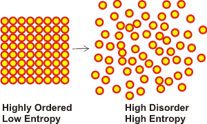</figure>

    <p>&nbsp;</p>
    <p>&nbsp;</p>
    <p>The  Second  Law of Thermodynamics  states that the  total order in an <a href="#isol">isolated system</a> cannot increase over time. The direction of both entropy change of the Universe and that of time are in the same direction and indicate that a time machine that goes back in time cannot be built, but one that goes forward can. If part of  a system becomes more ordered, other parts must become even more disordered. In ideal cases, the amount of order may remain constant.  There is only one way the entropy of a supposedly closed system can be decreased, and that is to transfer heat from the system (that is not closed). </p>
    <p>&nbsp;</p>
    <p>The maximum fraction of the&nbsp;heat&nbsp;absorbed by an&nbsp;engine&nbsp;that can be converted into work is known as the&nbsp;efficiency&nbsp;of the&nbsp;heat engine and depends on the temperature of the hot and cold heat sinks, in kelvin. </p>
    <p>&nbsp;</p>
	  <p align="center">% Efficiency = 100 <strong> &#739;</strong> (T<sub>hot</sub>- T<sub>cold</sub>)/(T<sub>hot</sub>)</p>
	  <p>&nbsp;</p>
	  <p>For example, if boiling and freezing water were the two extremes, the maximum efficiency would be 100 <strong> &#739;</strong> (373- 273)/373) = 26.8 % whereas if burning diesel oil (at 550&nbsp;&deg;C and room temperature at 25&nbsp;&deg;C were the extremes, then the maximum efficiency would be 100 <strong> &#739;</strong> (823- 298)/823) = 63.8 %. The % efficiency of a heat engine is always below one as zero kelvin can never be reached for the cold sink.    </p>
    <p>&nbsp;</p>
    <p><a name="S" id="S"></a>Thermodynamics introduces a term <strong>S</strong> that is the <strong>ENTROPY</strong>; a measure of disorder and chaos  of the system (a measure of the number of microscopic states of a system with units of J &#739; mol<sup>&minus;1</sup> &#739; K<sup>&minus;1</sup>). <a name="bd" id="bd"></a><sup> <a title="click for an explanation" href="#d">d</a></sup> An increase in disorder is an increase in entropy. More order means a decrease in entropy. &nbsp;It is related to  the probability that a system is in a particular state compared with all the possible states or arrangements. In a simple equiprobable system, it may be defined as </p>
    <p>&nbsp;</p>
  <p align="center"><em><strong>S</strong></em><strong><sub>0</sub> = <em>k<sub>B</sub></em>    &#739; Ln(&Omega;)</strong> <strong> </strong>&nbsp;&nbsp;&nbsp;&nbsp;&nbsp;&nbsp;&nbsp;&nbsp;&nbsp;&nbsp;(<a href="constants.html#J">J</a> &#739; K<sup>&minus;1</sup>)</p>
  <p align="center">&nbsp;</p>
      
      <p align="left">where <em>k<sub>B</sub></em> is the <a href="constants.html#boltz">Boltzmann constant</a> (used in the definition of the kelvin), Ln() is the natural logarithm,  and <strong>&Omega;</strong><em> </em>is the probability-related number of configurations; <strong>&Omega;</strong> &ge; 1 with <strong>&Omega;</strong>  1 when T  0.</p>
    <p><br />  
    &nbsp;&nbsp;&nbsp; <strong>&Delta;S</strong> is the <strong>CHANGE IN </strong><strong>ENTROPY</strong>; the change in  order or disorder</p>
    <p>&nbsp;</p>
    <p align="center"><strong>&Delta;<em>S</em> = &Sigma;{S<sub>Product</sub> } &minus; &Sigma;{S<sub>Reagent</sub>}</strong></p>
    <p align="center"><strong>&Delta;S<sub>overall</sub> = &Sigma; &Delta;S</strong></p>
    <p><br />
      By convention:&nbsp;&nbsp;</p>
    <p>&nbsp;&nbsp;&nbsp;  &Delta;S is positive when the disorder  increases; the system is more chaotic and disorganized; e.g., a liquid turning into a gas.<br />  
</p>    
    <p>&nbsp;&nbsp;&nbsp;  &Delta;S is negative when order  increases; the system is more ordered and organized; e.g., a liquid turning into a crystalline</p>
    <p>&nbsp;&nbsp;&nbsp;solid.</p>
    <p>&nbsp;</p>
    <p>If there is no change in enthalpy but a process proceeds, there must be  increased  entropy; e.g., gases are mixing.</p>    
    <p>If two systems are combined, the  final entropy is greater than the sum of the parts.<br />  
</p>    
    <p>&nbsp;</p>
    <p>Entropy change, by itself, cannot  predict the direction of a process </p>
    <p>&nbsp;</p>    
    <p>&nbsp;&nbsp;&nbsp;&nbsp;&nbsp;&nbsp;&nbsp;&nbsp;&nbsp;&nbsp;&nbsp;&nbsp;&nbsp;&nbsp;&nbsp;&nbsp;&nbsp;&nbsp;&nbsp;&nbsp;&nbsp;&nbsp;&nbsp;&nbsp;&nbsp;&nbsp;&nbsp;&nbsp;&nbsp;&nbsp;&nbsp;&nbsp;&nbsp;&nbsp;  2H<sub>2</sub> + O<sub>2</sub>&nbsp;&nbsp; &nbsp;&nbsp;&nbsp;&nbsp;&nbsp;&nbsp;  2H<sub>2</sub>O&nbsp;&nbsp;&nbsp;&nbsp;&nbsp;&nbsp;  clearly goes with negative entropy change as<br />  
    &nbsp; &nbsp;&nbsp;&nbsp;three molecules of a mixture&nbsp;&nbsp; &nbsp;&nbsp;&nbsp;&nbsp;&nbsp;&nbsp;&nbsp;&nbsp;two molecule of the same product</p>
    <p>&nbsp;</p>
    <p>Thus, this is a process that proceeds to give a more ordered product. However,  a large amount of heat (negative enthalpy change) increases the kinetic energy  and disorder in the products and the surroundings.  </p>
    <p>&nbsp;</p>
    <p>Therefore an entropy  change, by itself, cannot predict the direction of a process. <br />
</p>

    <p align="right">[<a title="go to top of page" href="#top"><span class="style16">Back to Top&nbsp;</span></a>]</p>
    <h2><a name="3rd" id="3rd"></a>The  Third  Law of Thermodynamics</h2>
    <p>The  Third  Law of Thermodynamics addresses the problem concerning the direction of a process. It  follows from a combination of the First and Second Laws. The entropy of a system approaches a constant value as its temperature approaches absolute zero. The entropy of a perfect crystal at absolute zero is precisely equal to zero. The third law provides an absolute reference point for the entropy of a system at higher temperatures. If a system is a glass, a mixture, or an imperfect crystal, or internally disordered such as <a href="hexagonal_ice.html#b">hexagonal ice</a>, or  still possessing&nbsp;quantum mechanical&nbsp;zero-point energy, or possesses other such properties, then its entropy is positive at absolute zero.</p>
    <p>&nbsp;</p>
    <p>It can  be expressed in everyday terms:</p>
    <p>&nbsp;</p>        
    <p><strong>&nbsp;&nbsp;&nbsp;&nbsp;&nbsp;&nbsp;&nbsp;&nbsp;&nbsp;&nbsp;&nbsp;&nbsp;&nbsp;&nbsp;&nbsp;&nbsp;&nbsp;&nbsp;&nbsp;&nbsp;&nbsp;&nbsp;&nbsp;&nbsp;&nbsp;&nbsp;&nbsp;&nbsp;&nbsp;&nbsp;&nbsp;&nbsp;&nbsp;&nbsp;&nbsp;&nbsp;&nbsp;&nbsp;&nbsp;&nbsp;&nbsp;&nbsp;You can't reach absolute zero</strong></p>
    <p><strong>&nbsp;&nbsp;&nbsp;&nbsp;&nbsp;&nbsp;&nbsp;&nbsp;&nbsp;&nbsp;&nbsp;&nbsp;&nbsp;&nbsp;&nbsp;&nbsp;&nbsp;&nbsp;&nbsp;&nbsp;&nbsp;&nbsp;&nbsp;&nbsp;&nbsp;&nbsp;&nbsp;&nbsp;&nbsp;&nbsp;&nbsp;&nbsp;&nbsp;&nbsp;&nbsp;&nbsp;&nbsp;&nbsp;&nbsp;&nbsp;&nbsp;&nbsp;</strong><strong>If gambling, you can't stay out of the  game<br />
    &nbsp;&nbsp;&nbsp;&nbsp;&nbsp;&nbsp;&nbsp;&nbsp;&nbsp;&nbsp;&nbsp;&nbsp;&nbsp;&nbsp;&nbsp;&nbsp;&nbsp;&nbsp;&nbsp;&nbsp;&nbsp;&nbsp;&nbsp;&nbsp;&nbsp;&nbsp;&nbsp;&nbsp;&nbsp;&nbsp;&nbsp;&nbsp;&nbsp;&nbsp;&nbsp;&nbsp;&nbsp;&nbsp;&nbsp;&nbsp;&nbsp;&nbsp;The First and Second Laws cannot be got around </strong>    </p>
    <p>&nbsp;</p>
    <p>Thermodynamics introduces a term <strong>G</strong> is the <strong>GIBBS  FREE ENERGY</strong> <a name="bc" id="bc"></a> <sup> <a title="click for an explanation" href="#c">c</a></sup> (available energy, with units J &#739; mol<sup>&minus;1</sup>); the ability to do work  of the system at constant  temperature and pressure. G is sometimes called, just, the 'free energy' or 'Gibbs energy'. <a name="bb" id="bb"></a> <sup> <a title="click for an explanation" href="#b">b, </a><a name="bg" id="bg"></a> <a title="click for an explanation" href="#g">g</a></sup></p>
    <p>&nbsp;</p>
    <p align="center"><strong>G = U + PV - TS</strong>&nbsp;&nbsp;&nbsp;&nbsp;&nbsp;&nbsp;&nbsp;&nbsp;&nbsp;&nbsp;(<a href="constants.html#J">J</a>)</p>
    <p align="center"><strong>G = H - TS</strong>&nbsp;&nbsp;&nbsp;&nbsp;&nbsp;&nbsp;&nbsp;&nbsp;&nbsp;&nbsp;&nbsp;&nbsp;&nbsp;&nbsp;&nbsp;&nbsp;&nbsp;&nbsp;&nbsp;(<a href="constants.html#J">J</a>)</p>
    <p><br />  
      &nbsp;&nbsp;&nbsp;  <strong>&Delta;G</strong> is the change in the <strong>Gibbs free energy</strong>. Gibbs free energy can do work at constant  temperature and pressure. It determines the direction of a conceivable chemical or physical process and is zero when a system is at equilibrium at constant temperature and pressure.<br />  
</p>    
    <p>&nbsp;</p>
    <p>In living systems (constant temperature  and pressure);</p>
    <p>&nbsp;</p>    
    <p align="center"><strong>&Delta;G  =  &Delta;H  - T &Delta;S&nbsp;&nbsp;&nbsp;&nbsp;&nbsp;&nbsp;&nbsp;&nbsp;&nbsp;&nbsp;(<a href="constants.html#J">J</a>)</strong></p>    
    <p>&nbsp;</p>
    <p>&nbsp;&nbsp;&nbsp;  &Delta;G is  the maximum work obtainable from a process<br />
    &nbsp;&nbsp;&nbsp;  &Delta;G is  negative when the system can proceed; the process is exergonic, and</p>
    <p>&nbsp;&nbsp;&nbsp;   &nbsp;&nbsp;&nbsp;   there is a positive flow of energy from the system to the surroundings<br />
      &nbsp;&nbsp;&nbsp;  &Delta;G is  positive when the system is unable to proceed;   the process is endergonic, and<br />
    &nbsp;&nbsp;&nbsp;&nbsp;&nbsp;&nbsp;    it takes more energy to start the reaction than what you get out of it. </p>
    <p>  &nbsp;&nbsp;&nbsp;   &Delta;G is  zero when the system is at equilibrium </p>    
    <p>&nbsp;</p>
    <p>Every  reaction has a characteristic &Delta;G  under defined conditions. Under  standard conditions (usually 1 M reactants and products, 298.15 K (25&nbsp;&deg;C), 100 kPa),  this is called the Standard Free Energy change and given the symbol,<strong> &Delta;G&deg;</strong>. </p>        
    <p>Where  the pH = 7, rather than [H<sup>+</sup>] = 1 M  this is given the symbol, <strong>&Delta;G&deg;'</strong></p>
    <p><br />  
</p>    
    <p>For the reaction&nbsp; A + B = C + D </p>    
    <p align="center">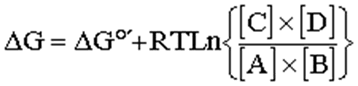</p>                            
    <p>where <a href="constants.html#gas">R</a> = gas constant (8.31 J  &#739; mol<sup>&minus;1</sup>   &#739; K<sup>&minus;1</sup>), T is the temperature (in kelvin), and Ln is the natural logarithm;</p>        
    <p>&nbsp;</p>
    <p>Given &Delta;G is zero when the system is in  equilibrium, therefore</p>
    <p><br />
    </p>
    <p align="center"><strong>&Delta;G&deg;'= - <a href="constants.html#gas">R</a>TLn  (K<sub>eq</sub>&deg;')</strong><strong>&nbsp;&nbsp;&nbsp;&nbsp;&nbsp;&nbsp;&nbsp;&nbsp;&nbsp;</strong>(<a href="constants.html#J">J</a>)<strong> &nbsp;</strong></p>
    <p align="center">&nbsp;</p>
    <p align="left
			  ">
	  </p>    
    <p>Thus , if K<sub>eq</sub>&deg;' =1 then &Delta;G&deg;' = 0, if K<sub>eq</sub>&deg;' =10 then &Delta;G&deg;' = -5.7 kJ &#739; mol<sup>&minus;1</sup>, and if K<sub>eq</sub>&deg;' = 0.1 then &Delta;G&deg;' = +5.7 kJ &#739; mol<sup>&minus;</sup>, </p>
<p>&nbsp;</p>
    <p>In a  sequence of reactions: </p>
    <p align="center"><strong>&Delta;G<sub>overall</sub> = &Sigma; &Delta;G</strong>    <strong>&nbsp;&nbsp;&nbsp;&nbsp;&nbsp;&nbsp;&nbsp;&nbsp;&nbsp;&nbsp;&nbsp;&nbsp;&nbsp;&nbsp;</strong>(<a href="constants.html#J">J</a>)<strong> &nbsp;&nbsp;&nbsp;&nbsp;&nbsp;&nbsp;&nbsp;&nbsp;</strong></p>
    <p align="center">&nbsp;</p>
    <p>thus,</p>        
    <p>&nbsp;&nbsp;&nbsp;&nbsp;&nbsp;&nbsp;&nbsp;&nbsp;&nbsp;&nbsp;&nbsp;&nbsp;  &nbsp; &nbsp;&nbsp;&nbsp;&nbsp;&nbsp;&nbsp;&nbsp;&nbsp;&nbsp;A + B = C +  D&nbsp;&nbsp;&nbsp;&nbsp;&nbsp;&nbsp;&nbsp;&nbsp; &nbsp; &Delta;G<sub>1</sub><br />  
    &nbsp;&nbsp;&nbsp;&nbsp;&nbsp;&nbsp;&nbsp;&nbsp;&nbsp;&nbsp;&nbsp;&nbsp;&nbsp;&nbsp;&nbsp;&nbsp;<u>&nbsp;&nbsp;&nbsp;&nbsp; &nbsp;&nbsp;&nbsp;C + E =  F&nbsp;&nbsp;&nbsp;&nbsp;&nbsp;&nbsp;&nbsp;&nbsp;&nbsp;&nbsp;&nbsp;&nbsp;&nbsp;&nbsp;&nbsp;&nbsp;&nbsp;     </u>&Delta;G<sub>2</sub><br />
      sum&nbsp;&nbsp;&nbsp;&nbsp;&nbsp;&nbsp;&nbsp;&nbsp;&nbsp; A + B + E = D +  F&nbsp;&nbsp;&nbsp;&nbsp;&nbsp;&nbsp;&nbsp;&nbsp;&nbsp;&nbsp;&nbsp; &Delta;G =  &Delta;G<sub>1</sub> + &Delta;G<sub>2</sub></p>        
    <p>&nbsp;</p>
    <p>So long as the overall &Delta;G is  negative, the reaction will go from left to right;  A + B + E  D +  F</p>    
    <p>As an example;</p>
    <p>&nbsp;&nbsp;&nbsp;&nbsp;&nbsp;&nbsp;&nbsp;&nbsp;&nbsp;&nbsp;&nbsp;&nbsp;&nbsp;&nbsp;&nbsp;&nbsp;&nbsp;&nbsp;&nbsp;&nbsp;&nbsp;&nbsp;&nbsp;&nbsp;&nbsp;&nbsp;&nbsp;&nbsp;&nbsp;&nbsp;&nbsp;&nbsp;&nbsp;&nbsp;&nbsp;&nbsp;&nbsp;&nbsp;&nbsp;&nbsp;&nbsp;&nbsp;&nbsp;&nbsp;&nbsp;&nbsp;&nbsp;&nbsp;&nbsp;&nbsp;&nbsp;&nbsp;&nbsp;&nbsp;&nbsp;&nbsp;&nbsp;&nbsp;&nbsp;&nbsp;&nbsp;&nbsp;&nbsp;&nbsp;&nbsp;&nbsp;&nbsp;&nbsp;&nbsp;&nbsp;&nbsp;&nbsp;&nbsp;&nbsp;&nbsp;&nbsp;&nbsp;&nbsp;&nbsp;&nbsp;&nbsp;&nbsp;&nbsp;&nbsp;&nbsp;&nbsp;&nbsp;&nbsp;&nbsp;&nbsp;&nbsp;&nbsp;&nbsp;&nbsp;&nbsp;&nbsp;&nbsp;&nbsp;&nbsp;&nbsp;&nbsp;&nbsp;&nbsp;&nbsp;&nbsp;&nbsp;&nbsp;&nbsp;&nbsp;&nbsp;&nbsp;&nbsp;&nbsp;&nbsp;&nbsp;&nbsp;&Delta;G&deg;',  kJ &#739; mol<sup>&minus;1</sup><br />  
      &nbsp;&nbsp;&nbsp;&nbsp;&nbsp;&nbsp;&nbsp;&nbsp;&nbsp;&nbsp;&nbsp;&nbsp;  &nbsp; &nbsp;&nbsp;&nbsp;&nbsp;&nbsp;&nbsp;&nbsp;&nbsp;&nbsp;&nbsp;  Glucose + phosphate = Glucose-6-phosphate + H<sub>2</sub>O&nbsp;&nbsp;&nbsp;&nbsp;&nbsp;&nbsp;&nbsp;&nbsp;&nbsp;&nbsp;&nbsp;&nbsp;  +13.8<br />  
    &nbsp;&nbsp;&nbsp;&nbsp;&nbsp;&nbsp;&nbsp;&nbsp;&nbsp;&nbsp;&nbsp;&nbsp;&nbsp;  &nbsp; &nbsp;&nbsp;&nbsp;&nbsp;&nbsp;&nbsp;&nbsp;&nbsp;<u>&nbsp;&nbsp;&nbsp;&nbsp;&nbsp;&nbsp;&nbsp;&nbsp;&nbsp;&nbsp;&nbsp;&nbsp;&nbsp;&nbsp;&nbsp;&nbsp;&nbsp;ATP + H</u><sub>2</sub><u>O =  ADP +  phosphate&nbsp;&nbsp;&nbsp;&nbsp;&nbsp;&nbsp;&nbsp;&nbsp;&nbsp;&nbsp;&nbsp;&nbsp;&nbsp;&nbsp;&nbsp;&nbsp;&nbsp;&nbsp;&nbsp;&nbsp;&nbsp;&nbsp;&nbsp;&nbsp;&nbsp;&nbsp;&nbsp;&nbsp;&nbsp;&nbsp;-  30.5</u><br />
&nbsp;&nbsp;&nbsp;&nbsp;&nbsp;&nbsp;&nbsp;&nbsp;&nbsp;&nbsp;&nbsp;&nbsp;  &nbsp; &nbsp;&nbsp;&nbsp;&nbsp;&nbsp;&nbsp;&nbsp;&nbsp;&nbsp;&nbsp;&nbsp;&nbsp;&nbsp;&nbsp;&nbsp;&nbsp;&nbsp;&nbsp;&nbsp;&nbsp;&nbsp;Glucose + ATP = ADP +  Glucose-6-phosphate&nbsp;&nbsp;&nbsp;&nbsp;&nbsp;&nbsp;&nbsp;&nbsp;&nbsp;&nbsp;&nbsp;&nbsp;&nbsp;- 16.7 </p>
    <p>&nbsp;</p>
    <p>Under standard conditions (at pH 7), the process directions are determined by &Delta;G&deg;';</p>
    <p align="center">Glucose-6-phosphate + H<sub>2</sub>O &nbsp;Glucose + phosphate</p>
    <p align="center">ATP + H<sub>2</sub>O  ADP +  phosphate&nbsp;&nbsp;    </p>
    <p align="center">Glucose + ATP  ADP +  Glucose-6-phosphate&nbsp;&nbsp;</p>
    <p>&nbsp;</p>
    <p>The ATP hydrolysis pulls the phosphorylation of the glucose.</p>
    <p>&nbsp;</p>
    <p>&Delta;G  depends on the concentration of the reactants and products as well as the  temperature and &Delta;G&deg;'. </p>
    <p>&nbsp;</p>
    <p align="center"><strong>Process direction depends  on &Delta;G</strong></p>
    <p align="center">&nbsp;</p>
    <p align="left">The fundamental equation of thermodynamics is</p>
    <p align="left">&nbsp;</p>
    <p align="center"><strong>&Delta;G = V &#739; &Delta;P - S &#739; &Delta;T + &Delta;n<sub>A</sub> &#739; &mu;<sub>A</sub> + &Delta;n<sub>B</sub> &#739; &mu;<sub>B</sub> +  &Delta;n<sub>C</sub> &#739; &mu;<sub>C</sub> +. . . . . . . .</strong>    </p>
    <p align="center"><strong>&Delta;G = V &#739; &Delta;P - S &#739; &Delta;T + &Sigma;<sub>i</sub>
    &Delta;n<sub>i</sub> &#739; &mu;<sub>i</sub></strong>&nbsp;&nbsp;&nbsp;&nbsp;&nbsp;&nbsp;&nbsp;&nbsp;&nbsp;&nbsp;&nbsp;&nbsp;&nbsp;&nbsp;&nbsp;&nbsp;&nbsp;&nbsp;&nbsp;&nbsp;&nbsp;&nbsp;&nbsp;&nbsp;&nbsp;&nbsp;&nbsp;&nbsp;&nbsp;&nbsp;&nbsp;&nbsp;&nbsp;&nbsp;&nbsp;&nbsp;&nbsp;&nbsp;&nbsp;&nbsp;&nbsp;&nbsp;&nbsp;&nbsp;&nbsp;&nbsp;&nbsp;&nbsp;&nbsp;&nbsp;&nbsp;&nbsp;&nbsp;&nbsp;&nbsp;&nbsp;</p>
    <p align="left">&nbsp;</p>
    <p align="left">At a surface, a further term must be added to the right-hand side;<strong> +&gamma;&Delta;A</strong> where <strong>&gamma;</strong> (<a href="constants.html#J" title="joule">J</a>     &#739; m<sup>&minus;2</sup>) and <strong>A</strong> (m<sup>2</sup>) are the surface tension and surface area, respectively.</p>
    <p align="left">&nbsp;</p>
    <p align="left">Four  Maxwell relations involve  the second derivatives of each of the four thermodynamic potentials, U, H, F, and G.</p>
    <p align="left">&nbsp;</p>
    <p align="center">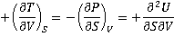 <br />    
      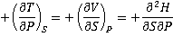 <br />    
    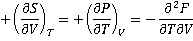 <br />    
    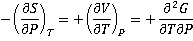</p>
    <p align="left">also,</p>
    <p align="center">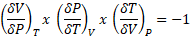</p>
    <p align="right">[<a title="go to top of page" href="#top"><span class="style16">Back to Top&nbsp;</span></a>]</p>
    <h2> 
<figure  class="floatright">
<figcaption>
      <p align="center">The chemical potential of substance A</p>
      <p align="center">&nbsp;</p>
</figcaption>
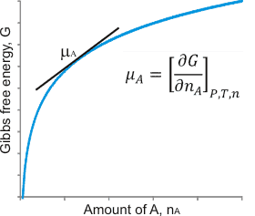</figure>
      <a name="pot" id="pot"></a>Chemical potential</h2>
    <p>The chemical potential (&mu;) is the energy of a material (e.g., a number of molecules) that changes with each of that  number of particles.  The (chemical) potential  is a term established by Willard Gibbs <a name="be" id="be"></a><sup> <a title="click for an explanation" href="#e">e</a></sup> and is the same as the molar Gibbs 
      free energy of formation, &Delta;G<sub>f</sub>, for a pure substance, with units of energy (<a href="constants.html#J">J</a> &#739; mol<sup>&minus;1</sup>). In a multiphase system (such as many foods) at equilibrium, the chemical potential &mu;<sub>i</sub> of individual components (i) is the same in all phases.</p>
    <p>&nbsp;</p>
    <p>For materials in a mixture, the chemical potential (&mu;) is the partial molar Gibbs free energy when both temperature, pressure, and other materials present are held constant</p>
    <p align="center">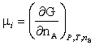<strong> &nbsp;&nbsp;&nbsp;&nbsp;&nbsp;</strong>&nbsp;&nbsp;&nbsp;&nbsp;(<a href="constants.html#J">J</a> &#739; mol<sup>&minus;1</sup>)</p>
    <p align="left">where the substance changing is A, with n<sub>A</sub> representing the number of A molecules, and  n<sub>B</sub> represents the number of molecules of all other materials present. Also,</p>
    <p align="left">&nbsp;</p>
    <p align="left"><strong> &nbsp;&nbsp;&nbsp;&nbsp;&nbsp;</strong>&nbsp;&nbsp;&nbsp;<strong> &nbsp;&nbsp;&nbsp;&nbsp;&nbsp;</strong>&nbsp;&nbsp;&nbsp;<strong> &nbsp;&nbsp;&nbsp;&nbsp;&nbsp;</strong>&nbsp;&nbsp;&nbsp;&nbsp;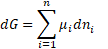<strong> &nbsp;&nbsp;&nbsp;&nbsp;&nbsp;</strong>&nbsp;&nbsp;&nbsp;&nbsp;&nbsp;&nbsp;(<a href="constants.html#J">J</a> &#739; mol<sup>&minus;1</sup>)</p>
    <p align="center">&nbsp;</p>
    <p align="left"> As dG equals the maximum work that can be performed at constant P and T, this sum of chemical potentials equals the additional (non-expansion) work that can arise from changing the composition of the system. Also related to this, it may measure  the  tendency  to diffuse.</p>
    <p align="left">&nbsp;</p>
    <p align="left">It follows that, </p>
    <p align="left">&nbsp;</p>
    <p align="center">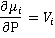&nbsp;&nbsp;&nbsp;&nbsp;&nbsp;&nbsp;&nbsp;and&nbsp;&nbsp;&nbsp;&nbsp;&nbsp;&nbsp;&nbsp;&nbsp;&nbsp;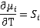</p>
    <p align="center">and &nbsp;&nbsp;&nbsp;&nbsp;&nbsp;&nbsp;&nbsp;&nbsp;&nbsp;&nbsp;&nbsp;&nbsp;&nbsp;&nbsp;&nbsp;&nbsp;&nbsp;&nbsp;&nbsp;&nbsp;&nbsp;&nbsp;&nbsp;&nbsp;&nbsp;&nbsp;&nbsp;&nbsp;&nbsp;&nbsp;&nbsp;&nbsp;&nbsp;&nbsp;&nbsp;&nbsp;&nbsp;&nbsp;&nbsp;&nbsp;&nbsp;&nbsp;&nbsp;&nbsp;&nbsp;&nbsp;&nbsp;&nbsp;&nbsp;&nbsp;&nbsp;&nbsp;&nbsp;&nbsp;&nbsp;&nbsp;&nbsp;&nbsp;&nbsp;&nbsp;d&mu; = -S<sub>m</sub>
    dT + V<sub>m</sub> dP &nbsp;&nbsp;&nbsp;&nbsp;&nbsp;&nbsp;&nbsp;&nbsp;&nbsp;&nbsp;&nbsp;&nbsp;&nbsp;&nbsp;&nbsp;&nbsp;&nbsp;&nbsp;&nbsp;&nbsp;&nbsp;&nbsp;&nbsp;&nbsp;&nbsp;&nbsp;&nbsp;&nbsp;&nbsp;&nbsp;&nbsp;&nbsp;&nbsp;&nbsp;&nbsp;&nbsp;&nbsp;&nbsp;&nbsp;&nbsp;&nbsp;&nbsp;(<a name="gibbs" id="gibbs"></a>The Gibbs equation)</p>
    <p align="left">&nbsp;</p>
    <p align="left">where S<sub>m</sub> and V<sub>m</sub> are the molar entropy and volume of the substance.</p>
    <p align="left">&nbsp;</p>
    <p align="left">The total Gibbs free energy of a mixture of A and B is</p>
    <p align="left">&nbsp;</p>
    <p align="center">G = n<sub>A</sub> &#739; &mu;<sub>A</sub> + n<sub>B</sub> &#739; &mu;<sub>B</sub><strong> &nbsp;&nbsp;&nbsp;&nbsp;&nbsp;&nbsp;&nbsp;&nbsp;&nbsp;</strong>(<a href="constants.html#J">J</a>)<strong> &nbsp;&nbsp;&nbsp;&nbsp;&nbsp;&nbsp;&nbsp;&nbsp;</strong></p>
    <p align="left">&nbsp;</p>
    <p align="left">The chemical potential (&mu;) is related to its activity (a) by </p>
    <p align="left">&nbsp;</p>
    <p align="center"><strong>&mu; = &mu;<sup>0</sup> + RT ln(a) </strong>&nbsp;&nbsp;&nbsp;&nbsp;&nbsp;&nbsp;&nbsp;&nbsp;&nbsp;&nbsp;(<a href="constants.html#J">J</a> &#739; mol<sup>&minus;1</sup>)</p>
    
      <p>&nbsp;</p>
      <p>where  &mu;<sup>0</sup> is a constant (the standard state), given values for T and P. The <a href="water_activity.html">activity</a> is a measure of the &quot;effective concentration&quot; of a material in a mixture. It is without units as it is always divided by the respective standard activity in the same units (e.g., a single concentration unit; often = 1 mol     &#739; L<sup>&minus;1</sup>). <a name="ba" id="ba"></a> <sup> <a title="click for an explanation" href="#a">a</a></sup></p>
      <p>&nbsp;</p>
    <p>The chemical potential of an aqueous solution is given by </p>
    <p>&nbsp;</p>
    <p align="center">&mu; =  &mu;<sup>0</sup> + RT ln(a<sub>w</sub>)  &nbsp;&nbsp;&nbsp;&nbsp;&nbsp;&nbsp;&nbsp;&nbsp;&nbsp;&nbsp;(<a href="constants.html#J">J</a> &#739; mol<sup>&minus;1</sup>)</p>
    <p align="center">&mu; =  &mu;<sup>0</sup> + RT ln(x<sub>w</sub>) &nbsp;&nbsp;&nbsp;&nbsp;&nbsp;&nbsp;&nbsp;&nbsp;&nbsp;&nbsp;(<a href="constants.html#J">J</a> &#739; mol<sup>&minus;1</sup>)</p>
    <p align="center">&nbsp;</p>
    <p align="left">where x<sub>w</sub> is the <a href="moles_molarity_molality.html">mole fraction</a> of the &lsquo;free&rsquo; water, a<sub>w</sub> is the <a href="water_activity.html">water activity</a>, and &mu;<sup>0</sup> is the chemical potential of the pure water. For a graph of &mu; versus a<sub>w</sub> see <a href="water_activity.html#potact">elsewhere</a>. There is a<a href="https://www.job-stiftung.de/index.php?data-collection"  title="opens new site in a pop-up window"   target="otherWin135" onclick="newWin('otherWin135')"> table of chemical potentials    compiled by Dr. Georg Job</a>.    </p>
    <p align="left">&nbsp;</p>
    <p align="left">If  material is distributed between two phases in equilibrium;</p>
    <p align="left"><br />
</p>
    <p align="center">&mu;<sub>A</sub> - &mu;<sub>B</sub> = RT ln(a<sub>A</sub>/a<sub>B</sub>) &nbsp;&nbsp;&nbsp;&nbsp;&nbsp;&nbsp;&nbsp;<strong> </strong>&nbsp;&nbsp;&nbsp;&nbsp;&nbsp;&nbsp;&nbsp;&nbsp;&nbsp;&nbsp;<strong> </strong>&nbsp;&nbsp;&nbsp;&nbsp;&nbsp;&nbsp;&nbsp;&nbsp;&nbsp;&nbsp;&nbsp;&nbsp;&nbsp;(<a href="constants.html#J">J</a> &#739; mol<sup>&minus;1</sup>)</p>
    <p align="right">&nbsp;</p>
    <p align="left">The molar chemical potential of water in an electrolyte solution (molality m; activity a),H<sub>2</sub>O<sub>(T, P, m)</sub>, can be written  as</p>
    <p>&nbsp;</p>
    <p align="center">&mu;H<sub>2</sub>O<sub>(T, P, m)</sub> = &mu;H<sub>2</sub>O<sub>(T, P, 0)</sub> + RT ln {a<sub>H2O(T, P, m)</sub>} &nbsp;&nbsp;&nbsp;&nbsp;&nbsp;&nbsp;&nbsp;&nbsp;&nbsp;&nbsp;(<a href="constants.html#J">J</a> &#739; mol<sup>&minus;1</sup>)</p>
    <p align="right">[<a title="go to top of page" href="#top"><span class="style16">Back to Top&nbsp;</span></a>] </p>
    <h2><a name="Cp" id="Cp"></a>Heat capacity and specific heat </h2>
    <p>The heat capacity (C) is the ratio of the measurable heat added (Q) or subtracted to an object to the resulting temperature change</p>
    <p>&nbsp;</p>
    <p align="center"><strong>C &equiv; &Delta;Q/&Delta;T</strong> </p>
    <p align="center">&nbsp;</p>
    <p>with units <a href="constants.html#J">J</a>  &#739; <a href="constants.html#kelvin">K</a><sup>&minus;1</sup>, and in the limit as &Delta;T tends to zero. The  specific heat (mass-specific heat capacity) is the heat capacity per unit mass of a material. C<sub>P</sub> and C<sub>V</sub> are the heat capacities at constant pressure (isobaric, C<sub>P </sub>= (&#8706;U/&#8706;T)<sub>P</sub> and constant volume (isochoric, C<sub>V </sub>= (&#8706;U/&#8706;T)<sub>V</sub>), respectively. The specific heat is the amount of heat needed to raise the temperature of one kilogram of mass by 1 kelvin. The <span class="style6">molar heat capacity</span> is the heat capacity per mole of a pure substance, and the <span class="style6">specific heat capacity</span> is the heat capacity per kg of a pure substance.</p>
    <p>&nbsp;</p>
    <p>As&nbsp;&nbsp;&nbsp;&nbsp;&nbsp;&nbsp;&nbsp;&nbsp;&nbsp;&nbsp;&nbsp;&nbsp;&nbsp;&nbsp;&nbsp;&nbsp; H = U + PV </p>
    <p align="center">&delta;Q = &delta;U + P&delta;V &nbsp;&nbsp;&nbsp;&nbsp;&nbsp;&nbsp;&nbsp;&nbsp;(<a href="constants.html#J">J</a>)&nbsp;&nbsp;&nbsp;&nbsp;&nbsp;&nbsp;&nbsp;&nbsp;&nbsp;</p>
    <p align="center">&nbsp;</p>
    <p align="center">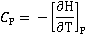 &nbsp;&nbsp;&nbsp;&nbsp;&nbsp;&nbsp;&nbsp;&nbsp;&nbsp;&nbsp;(<a href="constants.html#J">J</a> &#739; K<sup>&minus;1</sup>)</p>
    <p align="center">&nbsp;</p>
    <p align="center">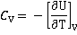  &nbsp;&nbsp;&nbsp;&nbsp;&nbsp;&nbsp;&nbsp;&nbsp;&nbsp;&nbsp;(<a href="constants.html#J">J</a> &#739; K<sup>&minus;1</sup>)</p>
    <p>&nbsp;</p>
    <p> where U is the internal energy and H is the system enthalpy.</p>
    <p>&nbsp;</p>
    <p>The full expressions are</p>
    <p>&nbsp;</p>
    <p align="center"><strong>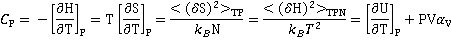&nbsp;</strong></p>
    <p>&nbsp;</p>
    <p align="center"><strong>&nbsp;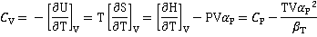</strong></p>
    <p align="center">&nbsp;</p>
    <p align="center">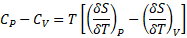</p>
<p align="center">&nbsp;</p>
<p align="center"><strong>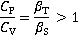</strong></p>
    <p>&nbsp;</p>
    <p align="left">where <em>k</em><sub>B</sub>, P, T, N,  V, H, S, &alpha;<sub>V</sub>,  &alpha;<sub>P</sub>, &beta;<sub>T</sub>, and &beta;<sub>S</sub>  are the <a title="go for its value" href="constants.html#boltz">Boltzmann constant</a>, pressure (Pa), temperature (K), number of molecules,  specific volume (V = 1/density; m<sup>3</sup> mol<sup>&minus;1</sup>), enthalpy, entropy, isobaric cubic expansion coefficient (&alpha;<sub>V</sub>=(&#8706;V/&#8706;T)<sub>P</sub>/V; K<sup>&minus;1</sup>), relative pressure coefficient (&alpha;<sub>P</sub>=(&#8706;P/&#8706;T)<sub>V</sub>/P; K<sup>&minus;1</sup>), isothermal compressibility (&beta;<sub>T</sub>=-(&#8706;V/&#8706;P)<sub>T</sub>/V; Pa<sup>&minus;1</sup>), and adiabatic compressibility (&beta;<sub>S</sub>=-(&#8706;V/&#8706;P)<sub>S</sub>/V; Pa<sup>&minus;1</sup>), respectively; the &lt;&gt; brackets indicate the fluctuations in the values about their mean values. (also see  [<a title="go to cited reference" href="ref15.html#r1481">1481</a><a name="r1481" id="r1481"></a>]). Thus, the heat capacity  measures  the entropy fluctuation<abbr title="mean square fluctuations in entropy"> &Delta;S</abbr> of N molecules at constant temperature and pressure. The isothermal compressibility measures  the fluctuations <abbr title="mean square fluctuations in entropy">&Delta;V</abbr> of the mean volume V occupied by a given number of molecules. The expansion coefficient is related to the correlations between the entropy and volume fluctuations. In contrast to most other liquids, in which entropy and volume fluctuations are positively correlated, <abbr title="mean square fluctuations in entropy">&Delta;S</abbr> and <abbr title="mean square fluctuations in entropy">&Delta;V</abbr> are anti-correlated in water below 4&nbsp;&deg;C, with a decline in volume fluctuations  associated with an enhancement of entropy fluctuations.</p>
    <p align="left">&nbsp;</p>
    <p align="left">For an <a href="steam.html#d">ideal gas</a> &nbsp;&nbsp;&nbsp;&nbsp;&nbsp;&nbsp;&nbsp;&nbsp;&nbsp;&nbsp;&nbsp;&nbsp;&nbsp;&nbsp;&nbsp;&nbsp;&nbsp;&nbsp;&nbsp;&nbsp;&nbsp; &nbsp;&nbsp;&nbsp;&nbsp;&nbsp;&nbsp;&nbsp;&nbsp;&nbsp;&nbsp;&nbsp;&nbsp;&nbsp;&nbsp;&nbsp;&nbsp;&nbsp;&nbsp;&nbsp;&nbsp;&nbsp;&nbsp;&nbsp;&nbsp;&nbsp;&nbsp;&nbsp;C<sub>P</sub> &minus; C<sub>V</sub> = n<a href="constants.html#gas">R</a></p>
    <p align="left">&nbsp;</p>
    <p align="left">where n is the number of moles of the gas and R is the Gas constant.    </p>
    <p align="right">[<a title="go to top of page" href="#top"><span class="style16">Back to Top&nbsp;</span></a>]</p>
    <h2><a name="power" id="power"></a>Power</h2>
    <p>Power&nbsp;is the amount of&nbsp;energy&nbsp;used, or work done, per unit time; with units, one watt = 1 <a href="constants.html#J">J</a> &#739; s<sup>&minus;1</sup>. Power may also be expressed as a force times its velocity. = N  &#739; m  &#739; s<sup>&minus;1</sup> = kg &#739; m &#739; s<sup>&minus;2</sup>   &#739; m  &#739; s<sup>&minus;1</sup> =  kg &#739; m<sup>2</sup> &#739; s<sup>&minus;3</sup> =  <a href="constants.html#J">J</a> &#739; s<sup>&minus;1</sup> = watt. When power is used over a specified time, the units are of energy used (or work done) such as Kilowatt-hours (kWh) = 3.6 M<a href="#J">J</a> (exactly).    </p>
    <p align="right">[<a title="go to top of page" href="#top"><span class="style16">Back to Top&nbsp;</span></a>]</p>
    <hr />
    <h2>Footnotes</h2>
      <p><sup><a name="a" id="a"> a</a></sup> Note: One is only allowed to take the logarithm of a dimensionless positive number, not of a physical quantity with dimensions (like m, s, L, mol, kg, V, etc.,). Thus when taking logarithms, <strong>a &equiv; a/a<sup>0</sup></strong> where <strong>a<sup>0</sup></strong> is standardized as one unit in the dimensions of <strong>a.</strong> In the same manner, you cannot use trigonometric nor exponential functions of physical quantities with dimensions. [<a href="#ba"><span title="go back to the text">Back</span></a>] </p>
      <p>&nbsp;</p>
      <p><sup><a name="b" id="b"> b</a></sup> <strong>Helmholtz free energy (A)</strong>. Under conditions of where no pressure/volume work can be extracted (A &le; G) but where pressure may change (a closed thermodynamic system, e.g., in closed explosions), <strong>G = U + PV - TS</strong> becomes.</p>
    <p>&nbsp;</p>
      <p align="center"><strong>A = U - TS </strong>&nbsp;&nbsp;&nbsp;&nbsp;&nbsp;&nbsp;&nbsp;&nbsp;&nbsp;&nbsp;&nbsp;&nbsp;&nbsp;&nbsp;&nbsp;&nbsp;&nbsp;&nbsp;&nbsp;&nbsp;&nbsp;&nbsp;&nbsp;&nbsp;&nbsp;&nbsp;&nbsp;&nbsp;&nbsp;(<a href="constants.html#J">J</a>)&nbsp;&nbsp;</p>
      <p align="center">&nbsp;</p>
      <p>where A is the Helmholtz free energy <sup> <a title="click for an explanation" href="#c">c</a></sup> (often given in Physics textbooks  as F), and as for reversible reactions,</p>
      <p>&nbsp; </p>
      <p align="center"><strong>dU=TdS - pdV </strong>&nbsp;&nbsp;&nbsp;&nbsp;&nbsp;&nbsp;&nbsp;and&nbsp;&nbsp;&nbsp;&nbsp;&nbsp;&nbsp;&nbsp; <strong>d(TS) =TdS +SdT </strong></p>
      <p align="center"><strong>dA = -SdT - pdV</strong></p>
      <p align="right">[<a href="#bb"><span title="go back to the text">Back</span></a>] &nbsp;&nbsp;</p>
      <p>&nbsp;</p>
      <p><sup><a name="c" id="c"> c</a></sup> It has been recommended that 'Gibbs free energy' and 'Helmholtz free energy' be known simply as 'Gibbs energy' [<a href="https://goldbook.iupac.org/html/G/G02629.html" title="opens new site in a pop-up window"   target="otherWin1" onclick="newWin('otherWin1')"><abbr title="International Union of Pure and Applied Chemistry">IUPAC</abbr></a>] and 'Helmholtz energy' [<a href="https://goldbook.iupac.org/html/H/H02772.html" title="opens new site in a pop-up window"   target="otherWin2" onclick="newWin('otherWin2')"><abbr title="International Union of Pure and Applied Chemistry">IUPAC</abbr></a>]  but, at present, there is a scientific consensus to keep the historical terms. [<a href="#bc"><span title="go back to the text">Back</span></a>] </p>
      <p>&nbsp;</p>
      <p><sup><a name="d" id="d"> d</a></sup><strong> Entropy (S</strong>). There are several distinct (but equally applicable) &quot;definitions&quot; of &quot;entropy&quot; which results in a bit of a muddle. e.g., in equilibrium thermodynamics, entropy is a measure of a system's thermal energy per unit temperature that is unavailable for doing useful work (dispersed energy). There is some dispute over associating 'entropy' with 'disorder', F. Jeppsson, J. Haglund and H. Str&ouml;mdahl, Exploiting language in teaching of entropy,  <em>Journal of Baltic Science Education</em>, <strong>10</strong> (2011) 27-35. There is also confusion over associating 'static' entropy (at thermodynamic equilibrium), with dynamic entropy 'changes in entropy' during a process, i.e., 'the arrow of time',  and kinetics; A. Ben-Naim, Entropy and time, <em>Entropy</em>, <strong>22</strong> (2020) 430. The present text rather likes this latter association as an aid to understanding the direction of processes.</p>
      <p>&nbsp;</p>
      <p>'Changes in entropy can some times be interpreted in terms of changes in disorder' A. Ben-Naim, Entropy: Order or information,<em> Journal of Chemical Education</em>, <strong>88</strong> (2011) 594-596. [<a href="#bd"><span title="go back to the text">Back</span></a>]</p>
      <p>&nbsp;</p>
	  <p><a name="e" id="e"> <sup>e</sup>
		  </a></sup><strong>Boltzmann constant</strong>. The <a href="constants.html#boltz">Boltzmann constant</a> (<em>k</em><sub>B</sub>) s the  proportionality constant relating the meam&nbsp;kinetic energy&nbsp;of&nbsp;particles&nbsp;in a&nbsp;gas&nbsp;with their&nbsp;thermodynamic temperature.  It has the dimensions of entropy. In <abbr title="Le Syst&egrave;me International d'Unit&eacute;s"><a href="http://physics.nist.gov/Pubs/SP330/sp330.pdf"   target="otherWin213" onclick="newWin('otherWin213')">SI</a></abbr> units, <em>k</em><sub>B</sub> = 1.380 649 &#739; 10<sup>&minus;23</sup> J &#739; K<sup>&minus;1 </sup> exactly. If expressed in terms of moles of material, one gets the gas constant <a href="constants.html#gas">R</a> (<a href="constants.html#gas">R</a> =<em> <a href="constants.html#boltz">k</a></em><a href="constants.html#boltz"><sub>B</sub></a> &#739; <a href="constants.html#avoga">N<sub>A</sub></a> = 8.314 <a href="#J">J</a> &#739; mol<sup>&minus;1</sup> &#739; K<sup>&minus;1</sup>.</p>
    <p>&nbsp;</p>
	  <p align="center">particle kinetic energy = &frac12;m&lt;v<sup>2</sup>&gt; =<sup> 3</sup>&frasl;<sub>2</sub><em>k</em><sub>B</sub>T  &nbsp;&nbsp;&nbsp;&nbsp;&nbsp;&nbsp;&nbsp;&nbsp;(<a href="constants.html#J">J</a>)&nbsp;&nbsp;</p>
	  <p align="center">&nbsp;</p>
	  <p align="center"><em>k</em><sub>B</sub> = m&lt;v<sup>2</sup>&gt;/3T &nbsp;&nbsp;&nbsp;&nbsp;&nbsp;&nbsp;&nbsp;&nbsp;&nbsp;&nbsp;&nbsp;&nbsp;&nbsp;&nbsp;&nbsp;&nbsp;&nbsp;&nbsp;&nbsp;&nbsp;&nbsp;&nbsp;&nbsp;&nbsp;&nbsp;&nbsp;&nbsp;&nbsp;&nbsp;&nbsp;&nbsp;&nbsp;&nbsp;&nbsp;&nbsp;&nbsp;&nbsp;&nbsp;&nbsp;&nbsp;&nbsp;(<a href="constants.html#J">J</a> &#739; K<sup>&minus;1</sup>)&nbsp;&nbsp;</p>
	  <p align="left">&nbsp;</p>
	  <p align="left">where &lt; &gt; indicates 'the mean value of'. These two equations hold for significant quantities of particles and not for single particles (it is meaningless to talk about the temperature of a single particle by itself). The value 3 in these equations derives from the 'three degrees of freedom'  of the three spatial directions (x,&nbsp;y,&nbsp;z).</p>
	  <p align="left">&nbsp;</p>
	  <p align="left">The <a href="constants.html#boltz">Boltzmann constant</a> is named after the Austrian physicist Ludwig Eduard Boltzmann (1844 - 1906) , also known for the definition of <a href="#S">entropy.</a></p>
	  <p align="right"> [<a href="#be"><span title="go back to the text">Back</span></a>]</p>
      <p>&nbsp;</p>
      <p><a name="f" id="f"> <sup>f</sup></a> Willard Gibbs (1839-1903) introduced the term 'potential' in 1875 (J. W. Gibbs, <a href="https://archive.org/details/Onequilibriumhe00Gibb">On the equilibrium of heterogeneous substances</a>,&nbsp;<em>Transactions of the Connecticut Academy of Arts and Sciences</em>.&nbsp;<strong>3</strong> (1875-1876, 1877-1878) 108-248, 343-524). [<a href="#bf"><span title="go back to the text">Back</span></a>]</p>
      <p>&nbsp;</p>
      <p><a name="g" id="g"> <sup>g</sup> Given an equation of state (EOS)</a> 3-dimensional graph connecting the Gibbs energy of liquid water over Temperature and Pressure, the following properties can be calculated (<abbr title = "International Assosiation for the Properties of Water and Steam"><a href="http://www.iapws.org/relguide/LiquidWater.pdf" title="opens new site in a pop-up window"   target="otherWin6" onclick="newWin('otherWin6')">IAPWS</a></abbr>), density, specific entropy, specific isobaric heat capacity, specific enthalpy, specific internal energy, specific Helmholtz energy, thermal expansion coefficient, isentropic temperature-pressure coefficient, isothermal compressibility, isentropic compressibility, and speed of sound. [<a href="#bg"><span title="go back to the text">Back</span></a>]</p>
    <p>&nbsp;</p>
<p align="right">[<a title="go to top of page" href="#top"><span class="style16">Back to Top&nbsp;</span></a>]</p>
      <p>&nbsp;</p>
    <div class="spacer"> </div>
</div>
</div>
<div style="width:761px; background-color:#006868;padding-top:0px;padding-bottom:3px;border:0px;margin:0px;">
  <div style="width:753px; background-image:url('images/bg2.gif');margin-left:3px;padding-left:2px;border:0px;padding-top:0px;padding-bottom:0px;background-color:#D8F0d8;">
    <p>&nbsp;</p>
    <p align="center"><span class="style3"><a title="Home page" href="index.html">Home</a> | <a title="go to our 'Site index'" href="water_structure_science.html" accesskey="I">Site Index</a> | <a title="go to our 'Site index'" href="water_redox.html" accesskey="I">Water redox</a> | <a title="go to our 'Site index'" href="electrolysis.html" accesskey="I">Water electrolysis</a> | <a href="http://www.lsbu.ac.uk/" ><abbr title="London South Bank University">LSBU</abbr></a> | <a title="go to top of page" href="#top">Top</a></span></p>
    <p>&nbsp;</p>
    <p align="center"><span class="style3">This page was established in 2017 and  last updated 
        by <a title="email me" href="mailto:martin.chaplin@btinternet.com?subject=from_water_web_site">Martin Chaplin</a> on
        <!-- #BeginDate format:Sw1 -->30 October, 2021<!-- #EndDate -->
</span></p>
    <br />
    <div class="floatleft" style="width:320px;">
      <div align="right"><a rel="license" href="https://creativecommons.org/licenses/by-nc-nd/2.0/uk/"></a></div>
</div>
   <span class="style4">This work is licensed under a <a rel="license" href="https://creativecommons.org/licenses/by-nc-nd/2.0/uk/">Creative Commons Attribution<br />
    -Noncommercial-No Derivative Works 2.0 UK: England &amp; Wales License</a></span>
    <p>&nbsp;</p>

    <div class="spacer"></div>
</div>
</div>
</body>
</html>
